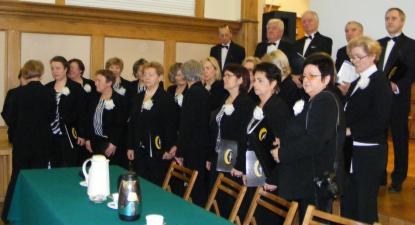

A tymczasem w Cameracie...
.
2012-02-29
Spotykamy się w sali widowiskowej „Magistrat” UMiG Wieliczka pół godziny przed występem. Tutaj odbędzie się spotkanie z cyklu „Wieliczka – Wieliczanie”, z okazji rocznicy stanu wojennego pt. „ Stan wojenny 13.12.1981 roku. Pamiętamy po 30 latach.” Jeszcze małe poprawki w wyglądzie i zaczynamy. Króciutka rozśpiewka. Całe spotkanie rozpoczyna nasz chór krótkim koncertem. Po koncercie wspólnie z uczestnikami spotkania zaśpiewaliśmy „Mury” i „Żeby Polska była Polską”.
Podziękowanie dla p. dyrygentki Izabeli Szoty i p. prezes Elżbiety Achinger.

© Stowarzyszenie Muzyczne Chór Camerata Wieliczka